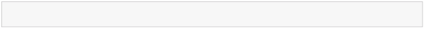
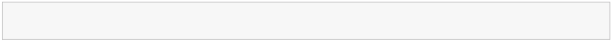
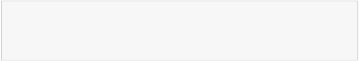
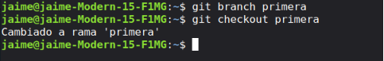
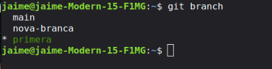
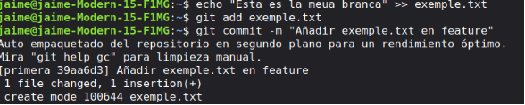
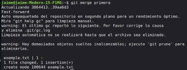
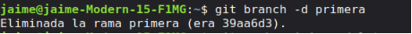
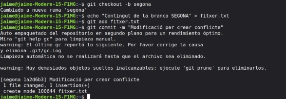

Examen realitzat
UD01 - Pràctica Curs 2025-
Pràctica 1: GIT - branques i unions
Objectius
En aquesta pràctica:
- Aprendràs el concepte de branca.
- Gestionaràs i coneixeràs el cicle de vida (creació, modificació, esborrat, …) de les branques.
- Aprendràs el concepte d’unió (merge) que ens fa possible la fusió de branques.
- Solucionaràs els possibles conflictes que poden aparèixer al moment del merge.
Què has de fer?
Treballa amb el repositori dels exercicis anteriors.
Una branca representa una línia independent de desenvolupament, és com crear una nova àrea de treball que tindrà el seu historial propi de commits.
Per llistar les branques locals executa:
1 $ git branch

2 * mainLa branca en què estàs treballant actualment s’assenyala amb un asterisc *. La branca main (en projectes antics s’anomena master) és la branca en què es comença en qualsevol projecte, i és la que s’utilitza com a branca principal on es troba el projecte en el seu estat final.
Crea una nova branca amb la instrucció:
1 $ git branch [rama]
Torna a llista les branques, comprova que encara està la branca main, per passar a la nova branca utilitza l’ordre:
1 $ git checkout [rama]
- Comprova que a la nova branca tens els mateixos fitxers que a la branca principal.
- Tots els canvis que faces als fitxers en aquesta branca no es veuran a la branca principal.
- Truc: amb l’ordre git checkout -b [branca] es crea una nova branca i te posiciones en ella.
- Amb l’ordre git branch -v es veu l’últim commit de cada branca. Comprova que coincideixen l’últim commit a les dues branques.
IAW - 2ASIX 1/3
- Truc: Pots fer servir una extensió del teu shell (bash, zsh,…) perquè et mostre al prompt la branca en què estàs treballant.
- Prova a modificar algun fitxer i crea un nou fitxer en aquesta branca. Realitza el commit i com- prova que aquests canvis no s’han reflectit als fitxers de la branca principal. Executa git branch
-v per a vore l’últim commit de cada branca.
Les branques no es creen automàticament a GitHub, cal fer un push per crear-les en remot. Nota: origin és el nom del dipòsit remot. Per tant executem:
1 $ git push origin [rama]
Quan has treballat en una branca, lo normal és incorporar/fusionar els canvis a la branca principal. Per unir una branca a la principal, executem:
1 $ git checkout main

2 $ git merge [rama]És prou freqüent crear una branca, fer els canvis que siguen necessaris, unir-la a una branca principal i després eliminar la branca que s’havia creat. Per eliminar una branca executem (No eliminis la branca en aquest punt):
1 $ git branch -d [rama]
Quan només s’han afegit o eliminat fitxers en una branca, és fàcil unir-la a la principal. El resultat simplement serà la suma o resta d’aquests fitxers a la principal. Quan es fan modificacions en fitxers, incloent canvis en els noms dels fitxers, git detecta aquests canvis i els adapta automàticament, però de vegades sorgeixen conflictes.
Realitza la fusió de la nova branca a la principal. S’han produït conflictes?
Els conflictes apareixen quan la mateixa part del codi s’ha modificat en dues branques diferents. Vegem-ne un exemple:
- Crea un fitxer prova.txt a la branca principal. Recorda fer un commit.
- Crea una nova branca i hi accedeix.
- Modifica el fitxer a la nova branca. Recorda fer un commit.
- Torna a la branca principal. I modifica de nou el fitxer abans de fer el merge.
- Realitza la unió i apareix el conflicte:
1 $ git merge nou
Auto-fusionant prova.txt CONFLICTE (contingut): Conflicte de fusió en prova.txt Fusió automàtica va fallar; arregla els conflictes i després realitza un commit amb el resultat.
IAW - 2ASIX 2/3
Si mirem el fitxer:
1 $ cat prueba.txt

2 <<<<<<< HEAD3 Hola cómo estás 4 =======
5 hola que tal
6 >>>>>>> nuevo
Tenim el contingut que estava a la branca principal (HEAD) i el que estava a la branca nova. Serà l’usuari qui haurà de deixar el contingut del fitxer com vullga.
Què has de lliurar?
- Crea una branca que s’anomene primera al teu repositori local, i executa la instrucció necessària per comprovar que s’ha creat.


- Crea un nou fitxer en aquesta branca i fusiona’l amb la principal. S’ha produït un conflicte? Raona la resposta.

No ha sorgit cap conflicte ja que tan sol hem fet una fusio de la branca primera, sols ix un warning .

- Esborra la branca primera.

- Crea una branca que s’anomene segona, i modifica un fitxer per produir un conflicte en unir-lo a la branca principal. Lliura el contingut del fitxer on s’ha produït el conflicte.

No me ix ningun conflicte ya que estic cambiant fitxer però desde le mateix lloc
- Soluciona el conflicte que has creat al punt anterior i sincronitza la branca segona al remot.
Pràctica 01 – Git. Treballant amb branques i unions
Documenta les diferents passes i inclou la url del teu repositori a Github.
- Recorda que hi haurà 2 branques: main i segona.
Referències
Taller de Git - josejuansanchez
IAW - 2ASIX 3/3